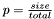

#include <stMAMView.h>
Public Member Functions | |
| stMAMViewObjectSample (stSize size, stSize total) | |
| ~stMAMViewObjectSample () | |
| bool | MayAdd () |
| void | Add (ObjectType *obj) |
| ObjectType ** | GetObjects () |
| stSize | GetSize () |
| stSize | GetDesiredSampleSize () |
The basic use of this class is:
* for all objects in the MAM do * if list.MayAdd() then * list.Add(Object) * end if * End for *
The template parameter ObjectType determines the type of object to handle and has no special requirements.
Definition at line 144 of file stMAMView.h.
|
||||||||||||||||
|
Creates a new instance of this class. The parameter size controls the number ob desired objectis in the sample and the parameter total determines the total number of objects in the universe. Both values are used to calculate the probability of acceptance of an object of the universe (using an uniform probability distribution - ).
Definition at line 156 of file stMAMView.h. References stSize. |
|
|||||||||
|
|
|
||||||||||
|
Adds a new object to the set.
Definition at line 193 of file stMAMView.h. |
|
|||||||||
|
Returns the desired size of the set. Definition at line 218 of file stMAMView.h. References stSize. |
|
|||||||||
|
Returns the array of objects. This method is suitable for stFastMapper::ChoosePivots(). Definition at line 204 of file stMAMView.h. |
|
|||||||||
|
Returns the number of objects in this set. Definition at line 211 of file stMAMView.h. References stSize. |
|
|||||||||
|
Ask this class if a given object from the tree may be added. This method should not be invoked more than once per object. According to probability laws, at the end of all insertion attempts, this method will allow about GetDesiredSampleSize() insertions.
Definition at line 178 of file stMAMView.h. References randomevent. |